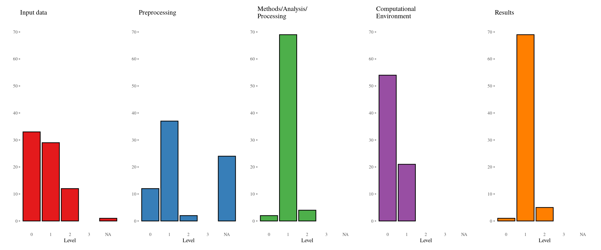
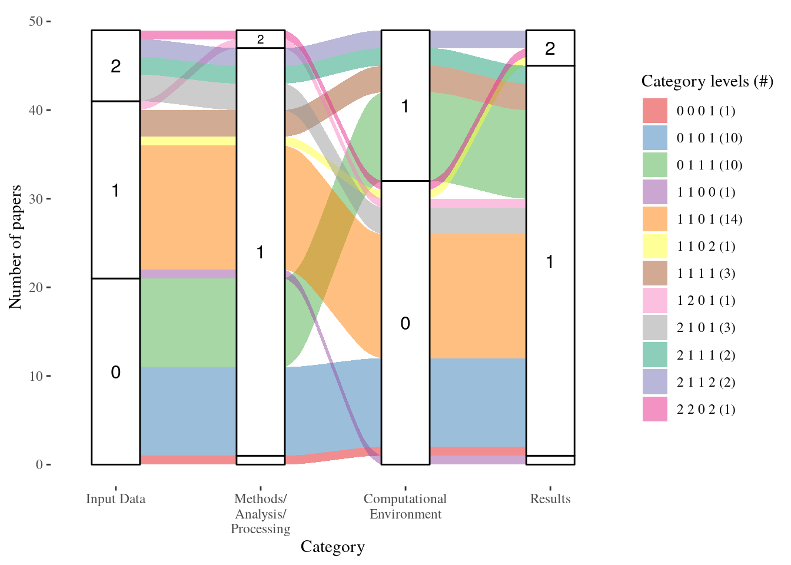
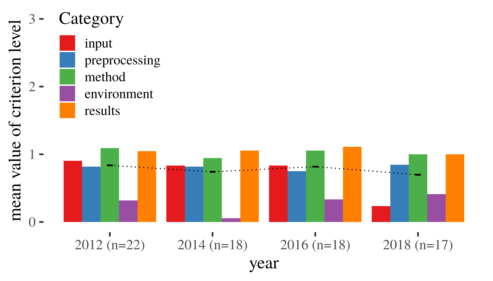

This document visualises the expert assessment for accepted full papers at the GIScience conference series for the following conferences and proceedings.
2018: Tenth International Conference on Geographic Information Science, Melbourne, Australia
Proceedings 10th International Conference on Geographic Information Science (GIScience 2018). 2018. In Winter, S., Griffin, A., Sester, M. (Eds.), LIPICS Vol. 114. ISBN 978-3-95977-083-5. http://www.dagstuhl.de/dagpub/978-3-95977-083-5
2016: Ninth International Conference on Geographic Information Science, Sep 27, 2016 - Sep 30, 2016, Montreal, Canada
Geographic Information Science. 2016. In J. A. Miller, D. O’Sullivan, & N. Wiegand (Eds.), Lecture Notes in Computer Science. Springer International Publishing. https://doi.org/10.1007/978-3-319-45738-3
2014: Eighth International Conference on Geographic Information Science, Sep 24, 2014 - Sep 26, 2014, Vienna, Austria > Geographic Information Science. 2014. In M. Duckham, E. Pebesma, K. Stewart, & A. U. Frank (Eds.), Lecture Notes in Computer Science. Springer International Publishing. https://doi.org/10.1007/978-3-319-11593-1
2012: Seventh International Conference on Geographic Information Science, Sep 18, 2012 - Sep 21, 2012, Columbus, Ohio, USA > Geographic Information Science. 2012. In N. Xiao, M.-P. Kwan, M. F. Goodchild, & S. Shekhar (Eds.), Lecture Notes in Computer Science. Springer Berlin Heidelberg. https://doi.org/10.1007/978-3-642-33024-7
The analysis is based on the assessment first published in “Reproducible research and GIScience: an evaluation using AGILE conference papers” (https://doi.org/10.7717/peerj.5072), see https://github.com/nuest/reproducible-research-and-giscience.
To create the assessment result data and figures based on this document you can run the following commands in a new R session after completing the prerequisites with the original paper corpus data. If you have problems rendering the document you can execute each chunk independently in RStudio.
# Following code is not executed when document is created
require("knitr")
require("rmarkdown")
rmarkdown::render("giscience-reproducibility-assessment.Rmd")This document does not install the required R packages by default. You can run the script install.R to install all required dependencies on a new R installation, or use install.packages(..) to install missing R packages. This is not required if you use the Docker container provided by the authors.
source("install.R")The plots and tables of survey data and evaluation use the packages ggplot2, knitr::kable(), huxtable, and kableExtra. Required libraries and runtime environment description are as follows.
library("tidyverse")
library("tidyr")
library("readr")
library("ggplot2")
library("reshape2")
library("ggthemes")
library("grid")
library("gridBase")
library("gridExtra")
library("kableExtra")
library("huxtable")
library("here")
library("googlesheets4")
library("patchwork")
library("knitr")
library("kableExtra")
library("ggalluvial")
library("ggfittext")assessment_file <- here::here("results/paper_assessment.csv")
codebook_file <- here::here("results/codebook.csv")The data is loaded from a collaborative spreadsheet using the googlesheets4 package. After a year is completed by all assessors, a named version of the spreadsheet is created. Then the data file /home/rstudio/results/paper_assessment.csv is updated from the online spreadsheet and committed to the git history. Afterwards the individual assessments are manually merged in the online spreadsheet and the data file is updated and committed once more.
The following plots are based on the data file /home/rstudio/results/paper_assessment.csv, the result from the manual reproducibility assessment. The file /home/rstudio/results/codebook.csv contains a codebook with names, labels, and descriptions for the variables in the data file as documentation of the dataset outside of this computational notebook.
category_levels <- c("0", "1", "2", "3")
paper_evaluation <- readr::read_csv(assessment_file,
col_types = readr::cols(
`conceptual paper` = readr::col_logical(),
`computational environment` = readr::col_factor(levels = category_levels),
`input data` = readr::col_factor(levels = category_levels),
`method/analysis/processing` = readr::col_factor(levels = category_levels),
preprocessing = readr::col_factor(levels = category_levels),
results = readr::col_factor(levels = category_levels)
),
na = "NA")## Warning: Missing column names filled in: 'X1' [1]paper_evaluation_wo_conceptual <- filter(paper_evaluation, `conceptual paper` == FALSE)
categoryColumns <- c("input data",
"preprocessing",
"method/analysis/processing",
"computational environment",
"results")options(knitr.kable.NA = '-')
knitr::kable(paper_evaluation %>%
dplyr::select(-matches("X1|reviewer|conceptual|authors")),
format = "html",
booktabs = TRUE,
caption = paste0("Reproducibility levels for paper corpus; ",
"'-' is category not available")) %>%
kableExtra::kable_styling("striped", full_width = FALSE)| paper | year | title | input data | preprocessing | method/analysis/processing | computational environment | results |
|---|---|---|---|---|---|---|---|
| 12018 | 2018 | Early Detection of Herding Behaviour during Emergency Evacuations | 1 |
|
1 | 0 | 1 |
| 22018 | 2018 | What Makes Spatial Data Big? A Discussion on How to Partition Spatial Data | 0 | 1 | 1 | 0 | 1 |
| 32018 | 2018 | Intersections of Our World | 0 | 1 | 1 | 0 | 1 |
| 42018 | 2018 | Considerations of Graphical Proximity and Geographical Nearness | 0 |
|
1 | 0 | 1 |
| 52018 | 2018 | An Empirical Study on the Names of Points of Interest and Their Changes with Geographic Distance | 0 | 1 | 1 | 0 | 1 |
| 62018 | 2018 | Outlier Detection and Comparison of Origin-Destination Flows Using Data Depth | 0 | 0 | 0 | 0 | 1 |
| 72018 | 2018 | Is Salience Robust? A Heterogeneity Analysis of Survey Ratings | 1 | 1 | 1 | 0 | 1 |
| 82018 | 2018 | Labeling Points of Interest in Dynamic Maps using Disk Labels | 1 | 2 | 2 | 0 | 1 |
| 92018 | 2018 | Improving Discovery of Open Civic Data | 0 |
|
1 | 0 | 1 |
| 102018 | 2018 | Local Co-location Pattern Detection: A Summary of Results | 0 | 1 | 1 | 1 | 1 |
| 112018 | 2018 | Detection and Localization of Traffic Signals with GPS Floating Car Data and Random Forest | 0 | 1 | 1 | 1 | 1 |
| 122018 | 2018 | Heterogeneous Skeleton for Summarizing Continuously Distributed Demand in a Region | 0 |
|
1 | 0 | 1 |
| 132018 | 2018 | A Network Flow Model for the Analysis of Green Spaces in Urban Areas | 1 | 1 | 1 | 1 | 1 |
| 142018 | 2018 | Continuous Obstructed Detour Queries | 0 | 0 | 1 | 1 | 1 |
| 152018 | 2018 | Enhanced Multi Criteria Decision Analysis for Planning Power Transmission Lines | 0 | 1 | 1 | 1 | 1 |
| 162018 | 2018 | FUTURES-AMR: Towards an Adaptive Mesh Refinement Framework for Geosimulations | 0 | 0 | 1 | 1 | 1 |
| 172018 | 2018 | xNet+SC: Classifying Places Based on Images by Incorporating Spatial Contexts | 0 | 1 | 1 | 1 | 1 |
| 12016 | 2016 | Computing River Floods Using Massive Terrain Data | 2 | 1 | 1 | 1 | 1 |
| 22016 | 2016 | Partitioning Polygons via Graph Augmentation | 0 |
|
1 | 0 | 1 |
| 32016 | 2016 | Hierarchical Prism Trees for Scalable Time Geographic Analysis | 2 | 2 | 2 | 0 | 2 |
| 42016 | 2016 | Mining Network Hotspots with Holes: A Summary of Results | 1 | 0 | 1 | 0 | 1 |
| 52016 | 2016 | Distance-Constrained k Spatial Sub-Networks: A Summary of Results | 0 | 0 | 1 | 1 | 1 |
| 62016 | 2016 | GIScience Considerations in Spatial Social Networks |
|
|
|
|
|
| 72016 | 2016 | On Distortion of Raster-Based Least-Cost Corridors | 0 | 0 | 1 | 0 | 1 |
| 82016 | 2016 | Model-Based Clustering of Social Vulnerability to Urban Extreme Heat Events | 1 | 1 | 1 | 0 | 1 |
| 92016 | 2016 | Representing the Spatial Extent of Places Based on Flickr Photos with a Representativeness-Weighted Kernel Density Estimation | 1 | 1 | 1 | 0 | 1 |
| 102016 | 2016 | Scaling Behavior of Human Mobility Distributions | 0 | 1 | 1 | 1 | 1 |
| 112016 | 2016 | pFUTURES: A Parallel Framework for Cellular Automaton Based Urban Growth Models | 0 | 0 | 1 | 1 | 1 |
| 122016 | 2016 | From Data Streams to Fields: Extending Stream Data Models with Field Data Types |
|
|
|
|
|
| 132016 | 2016 | Point Partitions: A Qualitative Representation for Region-Based Spatial Scenes in R2 |
|
|
|
|
|
| 142016 | 2016 | Fine Scale Spatio-Temporal Modelling of Urban Air Pollution | 0 | 1 | 1 | 0 | 1 |
| 152016 | 2016 | Modeling Checkpoint-Based Movement with the Earth Mover’s Distance | 2 | 1 | 1 | 0 | 1 |
| 162016 | 2016 | Exploratory Chronotopic Data Analysis | 1 | 1 | 1 | 0 | 1 |
| 172016 | 2016 | Exploring the Notion of Spatial Lenses | 1 | 1 | 1 | 0 | 1 |
| 182016 | 2016 | Moon Landing or Safari? A Study of Systematic Errors and Their Causes in Geographic Linked Data | 1 | 0 | 1 | 0 | 1 |
| 192016 | 2016 | Circles in the Water: Towards Island Group Labeling | 0 |
|
1 | 0 | 1 |
| 202016 | 2016 | An Algorithmic Framework for Labeling Road Maps | 2 | 1 | 1 | 1 | 2 |
| 212016 | 2016 | Measuring Cognitive Load for Map Tasks Through Pupil Diameter | 1 | 1 | 1 | 1 | 1 |
| 12014 | 2014 | Map Schematization with Circular Arcs | 0 |
|
1 | 0 | 1 |
| 22014 | 2014 | Travel-Time Maps: Linear Cartograms with Fixed Vertex Locations | 0 |
|
1 | 0 | 1 |
| 32014 | 2014 | 3D Network Spatialization: Does It Add Depth to 2D Representations of Semantic Proximity? | 1 | 1 | 1 | 1 | 1 |
| 42014 | 2014 | Uncertainty Analysis of Step-Selection Functions: The Effect of Model Parameters on Inferences about the Relationship between Animal Movement and the Environment | 2 | 1 | 1 | 0 | 1 |
| 52014 | 2014 | Logic Scoring of Preference and Spatial Multicriteria Evaluation for Urban Residential Land Use Analysis | 0 | 1 | 1 | 0 | 1 |
| 62014 | 2014 | Spatial Weights: Constructing Weight-Compatible Exchange Matrices from Proximity Matrices | 0 | 0 | 1 | 0 | 1 |
| 72014 | 2014 | Spatial Graphs Cost and Efficiency: Exploring Edges Competition by MCMC | 1 | 1 | 1 | 0 | 1 |
| 82014 | 2014 | Geosemantic Network-of-Interest Construction Social Media Data | 1 | 1 | 1 | 0 | 1 |
| 92014 | 2014 | Data Quality Assurance for Volunteered Geographic Information | 1 | 1 | 1 | 0 | 1 |
| 102014 | 2014 | Re-Envisioning Data Description Using Peirce’ Pragmatics |
|
|
|
|
|
| 112014 | 2014 | Fields as a Generic Data Type for Big Spatial Data | 1 | 1 | 1 | 0 | 1 |
| 122014 | 2014 | Linked Data - A Paradigm Shift for Geographic Information Science |
|
|
|
|
|
| 132014 | 2014 | An Ontology Design Pattern for Surface Water Features |
|
|
|
|
|
| 142014 | 2014 | An Indoor Navigation Ontology for Production Assets in a Production Environment | 0 |
|
0 | 0 | 1 |
| 152014 | 2014 | Wayfinding Decision Situations: A Conceptual Model and Evaluation | 1 | 1 | 1 | 0 | 1 |
| 162014 | 2014 | Understanding Information Requirements in “Text Only” Pedestrian Wayfinding Systems | 1 |
|
1 | 0 | 1 |
| 172014 | 2014 | Automatic Itinerary Reconstruction from Texts | 1 | 1 | 1 | 0 | 2 |
| 182014 | 2014 | Integrating Sensing and Routing for Indoor Evacuation | 0 |
|
1 | 0 | 1 |
| 192014 | 2014 | Significant Route Discovery: A Summary of Results | 2 | 0 | 1 | 0 | 1 |
| 202014 | 2014 | Location Oblivious Privacy Protection for Group Nearest Neighbor Queries | 2 |
|
1 | 0 | 1 |
| 212014 | 2014 | Practical Approaches to Partially Guarding a Polyhedral Terrain | 1 |
|
1 | 0 | 1 |
| 222014 | 2014 | Oriented Regions for Linearly Conceptualized Features |
|
|
|
|
|
| 232014 | 2014 | RCC-9 and CBM |
|
|
|
|
|
| 12012 | 2012 | Combining Trip and Task Planning: How to Get from A to Passport |
|
|
|
|
|
| 22012 | 2012 | Automated Centerline Delineation to Enrich the National Hydrography Dataset | 2 | 1 | 1 | 1 | 1 |
| 32012 | 2012 | Evolution Strategies for Optimizing Rectangular Cartograms | 1 | 1 | 1 | 1 | 1 |
| 42012 | 2012 | Context-Aware Similarity of Trajectories | 2 | 1 | 1 | 0 | 1 |
| 52012 | 2012 | Generating Named Road Vector Data from Raster Maps | 1 |
|
1 | 0 | 1 |
| 62012 | 2012 | An Ordering of Convex Topological Relations |
|
|
|
|
|
| 72012 | 2012 | Toward Web Mapping with Vector Data | 0 |
|
1 | 0 | 1 |
| 82012 | 2012 | spatial@linkedscience – Exploring the Research Field of GIScience with Linked Data | 2 | 1 | 1 | 1 | 2 |
| 92012 | 2012 | Crowdsourcing Satellite Imagery Analysis: Study of Parallel and Iterative Models | 0 | 0 | 1 | 0 | 1 |
| 102012 | 2012 | Quantifying Resolution Sensitivity of Spatial Autocorrelation: A Resolution Correlogram Approach | 0 | 1 | 1 | 1 | 1 |
| 112012 | 2012 | LocalAlert: Simulating Decentralized Ad-Hoc Collaboration in Emergency Situations |
|
|
2 | 1 | 1 |
| 122012 | 2012 | High-Level Event Detection in Spatially Distributed Time Series | 0 | 1 | 1 | 0 | 1 |
| 132012 | 2012 | Towards Vague Geographic Data Warehouses | 0 |
|
2 | 0 | 2 |
| 142012 | 2012 | Measuring the Influence of Built Environment on Walking Behavior: An Accessibility Approach | 1 | 1 | 1 | 0 | 1 |
| 152012 | 2012 | Social Welfare to Assess the Global Legibility of a Generalized Map | 0 |
|
1 | 0 | 1 |
| 162012 | 2012 | Investigations into the Cognitive Conceptualization and Similarity Assessment of Spatial Scenes | 1 |
|
1 | 1 | 1 |
| 172012 | 2012 | A Qualitative Bigraph Model for Indoor Space |
|
|
|
|
|
| 182012 | 2012 | Dynamic Refuse Collection Strategy Based on Adjacency Relationship between Euler Cycles | 2 |
|
1 | 0 | 1 |
| 192012 | 2012 | Impact of Indoor Location Information Reliability on Users’ Trust of an Indoor Positioning System | 1 |
|
1 | 0 | 1 |
| 202012 | 2012 | Ontology for the Engineering of Geospatial Systems | 1 |
|
1 | 0 | 1 |
| 212012 | 2012 | Preserving Detail in a Combined Land Use Ontology | 1 | 1 | 1 | 0 | 0 |
| 222012 | 2012 | The Maptree: A Fine-Grained Formal Representation of Space |
|
|
|
|
|
| 232012 | 2012 | Automatic Creation of Crosswalk for Geospatial Metadata Standard Interoperability | 1 | 0 | 1 | 0 | 1 |
| 242012 | 2012 | A Dartboard Network Cut Based Approach to Evacuation Route Planning: A Summary of Results | 2 |
|
1 | 1 | 1 |
| 252012 | 2012 | Hybrid Geo-spatial Query Methods on the Semantic Web with a Spatially-Enhanced Index of DBpedia | 1 |
|
1 | 0 | 1 |
| 262012 | 2012 | Extracting Dynamic Urban Mobility Patterns from Mobile Phone Data | 0 | 1 | 1 | 0 | 1 |
evaldata_numeric <- paper_evaluation_wo_conceptual %>%
# must convert factors to numbers to calculate the mean and median
dplyr::mutate_if(is.factor, list(~ as.integer(as.character(.))))
# https://stackoverflow.com/questions/32011873/force-summary-to-report-the-number-of-nas-even-if-none
summaryna <- function (v) {
if(!any(is.na(v))){
res <- c(summary(v),"NA's"=0)
} else{
res <- summary(v)
}
return(res)
}
# apply summary independently to format as table
summaries <- sapply(evaldata_numeric[,categoryColumns], summaryna)
exclude_values_summary <- c("1st Qu.", "3rd Qu.")
kable(subset(summaries, !(rownames(summaries) %in% exclude_values_summary)),
digits = 1,
col.names = c("input data", "preproc.", "method/analysis/proc.",
"comp. env.", "results"),
caption = "Statistics of reproducibility levels per criterion (rounded to one decimal place)") %>%
kableExtra::row_spec(0, bold = TRUE) %>%
kableExtra::kable_styling(latex_options = c("striped"),
font_size = 8)| input data | preproc. | method/analysis/proc. | comp. env. | results | |
|---|---|---|---|---|---|
| Min. | 0.0 | 0.0 | 0 | 0.0 | 0.0 |
| Median | 1.0 | 1.0 | 1 | 0.0 | 1.0 |
| Mean | 0.7 | 0.8 | 1 | 0.3 | 1.1 |
| Max. | 2.0 | 2.0 | 2 | 1.0 | 2.0 |
| NA’s | 1.0 | 24.0 | 0 | 0.0 | 0.0 |
The preprocessing has 51 values, with 0 and 1 around the “middle” resulting in a fraction as the median.
data_level_zero <- paper_evaluation_wo_conceptual %>%
filter(`input data` == 0) %>%
count() %>% .$n
data_level_two <- paper_evaluation_wo_conceptual %>%
filter(`input data` == 2) %>%
count() %>% .$n
preprocessing_included <- paper_evaluation_wo_conceptual %>%
filter(!is.na(preprocessing)) %>%
count() %>% .$n
preprocessing_level_one <- paper_evaluation_wo_conceptual %>%
filter(preprocessing == 1) %>%
count() %>% .$n
methods_and_results_eq_one <- paper_evaluation_wo_conceptual %>%
filter(`method/analysis/processing` == 1 & results == 1) %>%
count() %>% .$n
compenv_level_zero <- paper_evaluation_wo_conceptual %>%
filter(`computational environment` == 0) %>%
count() %>% .$n33 papers have level 0 and 12 have level 2 in the data criterion.
51 papers include some kind of preprocessing.
65 papers have level 1 in both methods and results criterion.
# match the colours to time series plot below
colours <- RColorBrewer::brewer.pal(length(categoryColumns), "Set1")
level_names <- c("0", "1", "2", "3", NA)
breaks <- seq(from = 0, to = nrow(paper_evaluation_wo_conceptual), by = 10)
criteriaBarplot = function(category, main, colour) {
cat <- enquo(category)
ggplot2::ggplot(data = paper_evaluation_wo_conceptual,
aes(!!cat),
show.legend = FALSE) +
ggplot2::geom_bar(fill = colours[colour], color = "black") +
ggplot2::ggtitle(main) +
ggplot2::xlab("Level") +
ggplot2::xlim(level_names) +
ggplot2::ylab("") +
ggplot2::scale_y_continuous(breaks = breaks,
limits = range(breaks)) +
ggthemes::theme_tufte(base_size = 8) + theme(axis.ticks.x = element_blank())
}
fig_barplot <- patchwork::wrap_plots(
ncol = 5,
criteriaBarplot(`input data`, main = "Input data", colour = 1),
criteriaBarplot(`preprocessing`, main = "Preprocessing", colour = 2),
criteriaBarplot(`method/analysis/processing`,
main = "Methods/Analysis/\nProcessing", colour = 3),
criteriaBarplot(`computational environment`,
main = "Computational\nEnvironment", colour = 4),
criteriaBarplot(results, main = "Results", colour = 5)
)
fig_barplot
This figure is based on package ggalluvial. It does not include the category preprocessing because it was discovered to be quite hard to assess, and subsequently has a large share of missing values. The figure also does not include any papers who have one or more categories as NA, as that means “not assessable”.
papers_wo_na_wo_prepr <- paper_evaluation_wo_conceptual %>%
drop_na() %>%
mutate_if(is.factor, forcats::fct_rev) %>%
group_by(`input data`,
`method/analysis/processing`,
`computational environment`,
results) %>%
tally() %>%
mutate(`Category levels (#)` = paste0(`input data`, " ",
`method/analysis/processing`, " ",
`computational environment`, " ",
results, " (", n, ")"))fig_alluvial <- ggplot(data = papers_wo_na_wo_prepr,
aes(axis1 = `input data`,
axis2 = `method/analysis/processing`,
axis3 = `computational environment`,
axis4 = results,
y = n)
) +
ggplot2::scale_x_discrete(limits = c("Input Data",
"Methods/\nAnalysis/\nProcessing",
"Computational\nEnvironment",
"Results"),
expand = c(.1, 0)
) +
xlab("Category") +
ylab("Number of papers") +
ggplot2::scale_fill_manual(values = c(
RColorBrewer::brewer.pal(9, "Set1"), # colours from the other plots
RColorBrewer::brewer.pal(4, "Dark2")[c(1,3,4)]) # manually chosen from another palette
) +
ggalluvial::geom_alluvium(aes(fill = `Category levels (#)`), width = 1/3) +
ggalluvial::geom_stratum(alpha = 1) +
ggfittext::geom_fit_text(stat = "stratum", aes(label = after_stat(stratum)), min.size = 1) +
ggthemes::theme_tufte()
fig_alluvial
means <- lapply(evaldata_numeric %>%
select(all_of(categoryColumns)),
summary) %>%
lapply(`[[`, "Mean") %>%
as.data.frame()
kable(means,
digits = 2,
col.names = c("input data", "preproc.", "method/analysis/proc.", "comp. env.", "results"),
caption = "Mean levels per criterion for non-conceptual papers") %>%
kableExtra::kable_styling("striped", full_width = FALSE)| input data | preproc. | method/analysis/proc. | comp. env. | results |
|---|---|---|---|---|
| 0.72 | 0.8 | 1.03 | 0.28 | 1.05 |
means_years <- evaldata_numeric %>%
filter(`conceptual paper` == FALSE) %>%
group_by(year) %>%
summarise(mean = mean(c(`input data`,
preprocessing,
`method/analysis/processing`,
`computational environment`,
`results`),
na.rm = TRUE),
`paper count` = n())
means_years_table <- means_years %>%
mutate(mean = round(mean, 2),
`paper count` = as.character(`paper count`)) %>%
mutate(labels = str_c(year, " (n = ", `paper count`, ")")) %>%
column_to_rownames("labels") %>%
select(mean) %>%
t()
kable(means_years_table,
caption = "Summarised mean values over all criteria over time (non-conceptual papers)") %>%
kableExtra::kable_styling("striped", full_width = TRUE)| 2012 (n = 22) | 2014 (n = 18) | 2016 (n = 18) | 2018 (n = 17) | |
|---|---|---|---|---|
| mean | 0.84 | 0.73 | 0.82 | 0.69 |
evaldata_years <- evaldata_numeric %>%
filter(`conceptual paper` == FALSE) %>%
group_by(year) %>%
summarise(input = mean(`input data`, na.rm = TRUE),
preprocessing = mean(preprocessing, na.rm = TRUE),
method = mean(`method/analysis/processing`, na.rm = TRUE),
environment = mean(`computational environment`, na.rm = TRUE),
results = mean(results, na.rm = TRUE))
paper_count_years <- evaldata_numeric %>%
filter(`conceptual paper` == FALSE) %>%
group_by(year) %>%
summarise(`paper count` = n())
evaldata_years_long <- melt(evaldata_years, id.vars = c("year"))
fig_mean_over_time <- ggplot(evaldata_years_long, aes(year, value)) +
geom_bar(aes(fill = variable), position = "dodge", stat = "identity") +
#geom_errorbar(stat = "summary", fun.data = "mean_sdl",
# fun.args = list(mult = 1),
# position = position_dodge(width = 0.9)) +
ylab("mean value of criterion level") +
scale_x_continuous(breaks = evaldata_years$year,
labels = paste0(paper_count_years$year,
" (n=",
paper_count_years$`paper count`,
")")) +
scale_fill_brewer(palette = "Set1", name = "Category") +
ggthemes::theme_tufte(base_size = 18) +
theme(legend.position = c(0.15,0.75),
legend.text = element_text(size = 14)) +
ylim(0, 3) +
stat_summary(fun = mean, fun.min = mean, fun.max = mean, shape = "-", size = 2) +
stat_summary(fun = mean, geom = "line", linetype = "dotted", mapping = aes(group = 1))
fig_mean_over_time
This document is licensed under a Creative Commons Attribution 4.0 International License. All contained code is licensed under the Apache License 2.0. This document is versioned in a public git repository, https://github.com/nuest/reproducible-research-at-giscience, and archived on Zenodo at https://doi.org/10.5281/zenodo.4032875.
Runtime environment description:
## ─ Session info ───────────────────────────────────────────────────────────────────────────────────
## setting value
## version R version 3.6.3 (2020-02-29)
## os Debian GNU/Linux 10 (buster)
## system x86_64, linux-gnu
## ui X11
## language (EN)
## collate en_US.UTF-8
## ctype en_US.UTF-8
## tz Etc/UTC
## date 2021-06-01
##
## ─ Packages ───────────────────────────────────────────────────────────────────────────────────────
## package * version date lib source
## assertthat 0.2.1 2019-03-21 [1] CRAN (R 3.6.3)
## backports 1.1.6 2020-04-05 [1] CRAN (R 3.6.3)
## base * 3.6.3 2020-05-14 [2] local
## broom 0.5.6 2020-04-20 [1] CRAN (R 3.6.3)
## callr 3.4.3 2020-03-28 [1] CRAN (R 3.6.3)
## cellranger 1.1.0 2016-07-27 [1] CRAN (R 3.6.3)
## cli 2.0.2 2020-02-28 [1] CRAN (R 3.6.3)
## colorspace 1.4-1 2019-03-18 [1] CRAN (R 3.6.3)
## compiler 3.6.3 2020-05-14 [2] local
## crayon 1.3.4 2017-09-16 [1] CRAN (R 3.6.3)
## datasets * 3.6.3 2020-05-14 [2] local
## DBI 1.1.0 2019-12-15 [1] CRAN (R 3.6.3)
## dbplyr 1.4.3 2020-04-19 [1] CRAN (R 3.6.3)
## desc 1.2.0 2018-05-01 [1] CRAN (R 3.6.3)
## devtools 2.3.0 2020-04-10 [1] CRAN (R 3.6.3)
## digest 0.6.25 2020-02-23 [1] CRAN (R 3.6.3)
## dplyr * 0.8.5 2020-03-07 [1] CRAN (R 3.6.3)
## ellipsis 0.3.0 2019-09-20 [1] CRAN (R 3.6.3)
## evaluate 0.14 2019-05-28 [1] CRAN (R 3.6.3)
## fansi 0.4.1 2020-01-08 [1] CRAN (R 3.6.3)
## farver 2.0.3 2020-01-16 [1] CRAN (R 3.6.3)
## forcats * 0.5.0 2020-03-01 [1] CRAN (R 3.6.3)
## fs 1.4.1 2020-04-04 [1] CRAN (R 3.6.3)
## generics 0.0.2 2018-11-29 [1] CRAN (R 3.6.3)
## ggalluvial * 0.11.3 2020-04-16 [1] CRAN (R 3.6.3)
## ggfittext * 0.8.1 2019-07-18 [1] CRAN (R 3.6.3)
## ggplot2 * 3.3.0 2020-03-05 [1] CRAN (R 3.6.3)
## ggthemes * 4.2.0 2019-05-13 [1] CRAN (R 3.6.3)
## glue 1.4.0 2020-04-03 [1] CRAN (R 3.6.3)
## googlesheets4 * 0.1.1 2021-06-01 [1] Github (tidyverse/googlesheets4@ec3946b)
## graphics * 3.6.3 2020-05-14 [2] local
## grDevices * 3.6.3 2020-05-14 [2] local
## grid * 3.6.3 2020-05-14 [2] local
## gridBase * 0.4-7 2014-02-24 [1] CRAN (R 3.6.3)
## gridExtra * 2.3 2017-09-09 [1] CRAN (R 3.6.3)
## gtable 0.3.0 2019-03-25 [1] CRAN (R 3.6.3)
## haven 2.2.0 2019-11-08 [1] CRAN (R 3.6.3)
## here * 0.1 2017-05-28 [1] CRAN (R 3.6.3)
## highr 0.8 2019-03-20 [1] CRAN (R 3.6.3)
## hms 0.5.3 2020-01-08 [1] CRAN (R 3.6.3)
## htmltools 0.4.0 2019-10-04 [1] CRAN (R 3.6.3)
## httr 1.4.1 2019-08-05 [1] CRAN (R 3.6.3)
## huxtable * 4.7.1 2020-01-08 [1] CRAN (R 3.6.3)
## jsonlite 1.6.1 2020-02-02 [1] CRAN (R 3.6.3)
## kableExtra * 1.1.0 2019-03-16 [1] CRAN (R 3.6.3)
## knitr * 1.28 2020-02-06 [1] CRAN (R 3.6.3)
## labeling 0.3 2014-08-23 [1] CRAN (R 3.6.3)
## lattice 0.20-38 2018-11-04 [2] CRAN (R 3.6.3)
## lifecycle 0.2.0 2020-03-06 [1] CRAN (R 3.6.3)
## lubridate 1.7.8 2020-04-06 [1] CRAN (R 3.6.3)
## magrittr 1.5 2014-11-22 [1] CRAN (R 3.6.3)
## memoise 1.1.0 2017-04-21 [1] CRAN (R 3.6.3)
## methods * 3.6.3 2020-05-14 [2] local
## modelr 0.1.6 2020-02-22 [1] CRAN (R 3.6.3)
## munsell 0.5.0 2018-06-12 [1] CRAN (R 3.6.3)
## nlme 3.1-144 2020-02-06 [2] CRAN (R 3.6.3)
## patchwork * 1.1.0 2021-06-01 [1] Github (thomasp85/patchwork@48819a9)
## pillar 1.4.3 2019-12-20 [1] CRAN (R 3.6.3)
## pkgbuild 1.0.6 2019-10-09 [1] CRAN (R 3.6.3)
## pkgconfig 2.0.3 2019-09-22 [1] CRAN (R 3.6.3)
## pkgload 1.0.2 2018-10-29 [1] CRAN (R 3.6.3)
## plyr 1.8.6 2020-03-03 [1] CRAN (R 3.6.3)
## prettyunits 1.1.1 2020-01-24 [1] CRAN (R 3.6.3)
## processx 3.4.2 2020-02-09 [1] CRAN (R 3.6.3)
## ps 1.3.2 2020-02-13 [1] CRAN (R 3.6.3)
## purrr * 0.3.4 2020-04-17 [1] CRAN (R 3.6.3)
## R6 2.4.1 2019-11-12 [1] CRAN (R 3.6.3)
## RColorBrewer 1.1-2 2014-12-07 [1] CRAN (R 3.6.3)
## Rcpp 1.0.4.6 2020-04-09 [1] CRAN (R 3.6.3)
## readr * 1.3.1 2018-12-21 [1] CRAN (R 3.6.3)
## readxl 1.3.1 2019-03-13 [1] CRAN (R 3.6.3)
## remotes 2.1.1 2020-02-15 [1] CRAN (R 3.6.3)
## reprex 0.3.0 2019-05-16 [1] CRAN (R 3.6.3)
## reshape2 * 1.4.4 2020-04-09 [1] CRAN (R 3.6.3)
## rlang 0.4.5 2020-03-01 [1] CRAN (R 3.6.3)
## rmarkdown 2.5 2021-06-01 [1] Github (rstudio/rmarkdown@4ff2093)
## rprojroot 1.3-2 2018-01-03 [1] CRAN (R 3.6.3)
## rstudioapi 0.11 2020-02-07 [1] CRAN (R 3.6.3)
## rvest 0.3.5 2019-11-08 [1] CRAN (R 3.6.3)
## scales 1.1.0 2019-11-18 [1] CRAN (R 3.6.3)
## sessioninfo 1.1.1 2018-11-05 [1] CRAN (R 3.6.3)
## stats * 3.6.3 2020-05-14 [2] local
## stringi 1.4.6 2020-02-17 [1] CRAN (R 3.6.3)
## stringr * 1.4.0 2019-02-10 [1] CRAN (R 3.6.3)
## testthat 2.3.2 2020-03-02 [1] CRAN (R 3.6.3)
## tibble * 3.0.1 2020-04-20 [1] CRAN (R 3.6.3)
## tidyr * 1.0.2 2020-01-24 [1] CRAN (R 3.6.3)
## tidyselect 1.0.0 2020-01-27 [1] CRAN (R 3.6.3)
## tidyverse * 1.3.0 2019-11-21 [1] CRAN (R 3.6.3)
## tools 3.6.3 2020-05-14 [2] local
## usethis 1.6.0 2020-04-09 [1] CRAN (R 3.6.3)
## utils * 3.6.3 2020-05-14 [2] local
## vctrs 0.2.4 2020-03-10 [1] CRAN (R 3.6.3)
## viridisLite 0.3.0 2018-02-01 [1] CRAN (R 3.6.3)
## webshot 0.5.2 2019-11-22 [1] CRAN (R 3.6.3)
## withr 2.2.0 2020-04-20 [1] CRAN (R 3.6.3)
## xfun 0.15 2021-06-01 [1] Github (yihui/xfun@06e86a6)
## xml2 1.3.2 2020-04-23 [1] CRAN (R 3.6.3)
## yaml 2.2.1 2020-02-01 [1] CRAN (R 3.6.3)
##
## [1] /usr/local/lib/R/site-library
## [2] /usr/local/lib/R/library